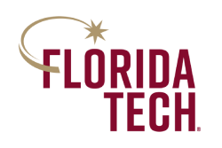
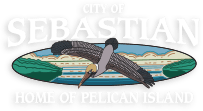
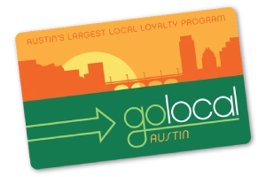

Highlights
Product Leader
- Delivered a stalled $4B strategic initiative at Amazon, from red to green in 3 months.
- Delivered $41M+ incremental profit at Discover Financial through operational improvements.
- Over 16 years scaling marketing technology operations from startup to enterprise level.
Scale Operations
- Amazon: Grew team 6 to 45 people, budget $5M to $75M, expanded 1 to 13 countries.
- Discover: Built marketing technology organization from 3 to 19 people while integrating 18 disparate teams.
- Consistent track record of promotion in every corporate role.
Measurable Results
- Amazon: +59.8% conversion rate improvement, -42% customer acquisition cost reduction.
- Amazon: Reduced campaign deployment time by 60%, improved attribution accuracy by 85%.
- Discover: Delivered $16mm in incremental profit in 9 months, $6mm in cost savings, $9mm in revenue.
Diverse Experience
- Product Management, Product Marketing, Head of Digital, Front-end Developer, Consultant.
- $AMZN Amazon, $DFS Discover Financial, $CCL Carnival Cruise Lines.
Board Positions

Committee Chair
Florida Institute of Technology, Bisk College of Business Advisory Board
June 2024 - currentIt is an honor to support the Florida Institute
of Technology Bisk College of Business
FIT CoB Board
- Chair of College of Business Marketing Committee.
- Guide marketing strategy for programs serving 7,000 students.

Trustee
Member, Board of Trustees
Sebastian City Police Retirement Investment Commission
June 2024 - currentIt is my distinct privilege to serve the City of Sebastian by joining the Police Retirement Investment Fund alongside, and to the benefit of, the brave men and women keeping our city safe.
- Serve as fiduciary trustee for municipal police pension fund.
- Oversee investment policy and actuarial compliance.
- Ensure sustainable retirement benefits for city police officers.
Professional Experience
Founder & CEO
ZingLab Technology Solutions
May 2023 - Current- Develop AI-enabled solutions for businesses.
- Provide AI strategy and implementation guidance.
Head of Marketing Technology
Director of Product
Discover Finanacial Services
March 2022 - May 2023 Situation:- Created MarTech organization in 2022, reporting to Chief Product Officer.
- Saved $33M through software consolidation and vendor renegotiation.
- Generated $9M incremental revenue across marketing organizations.
- Managed 15-person team including 4 directors and $15M budget.
- Connected 18 previously isolated marketing teams through unified tech stack.
- Hired and onboarded permanent VP successor before departing for AI ventures.
Senior Product Manager
Amazon
August 2020 - February 2022- Built ML-powered dynamic ad platform driving 65% of program conversions.
- Delivered multi-billion dollar S-team initiative across 13 countries in 18 months vs 4-year SLA.
- Increased stalled program's conversion ceiling by 60% in 90 days: found 33% attribution gap, optimized copy for 15% lift, created new templates for 10% gain.
- Covered Sr PMM role for 4 months: achieved green status on S-team goals, cut weekly reporting by 8 hours per person.
- Managed 6 direct reports while maintaining 70% IC contribution.
Senior Manager Marketing Operations
Holland America Line
November 2019 - July 2020- Automated email production system reducing creation time by 94% and QA time by 90%.
- Built proprietary email components saving $40K annually in licensing fees.
- Established centralized Email Marketing Team from fragmented resources.
- Developed template system saving 4,000 labor hours per year.
- Position eliminated during COVID-19 layoffs.

Head of Digital
GoLocal Austin
May 2015 - November 2019- Owned all web, ecommerce, digital marketing, and data analytics.
- Developed dual-sided B2C and B2B eCommerce platform.
- Automated email nurture campaigns for both buyers and sellers.
- Integrated payment processing and vendor management systems.
- Built analytics dashboard for marketplace performance tracking.
- Facilitated business sale to private equity.
Speaking Engagements
"The Effect of Artificial Intelligence on Business and Society"
Florida Institute of Technology
October 2024Featured panelist for major forum examining AI's impact on business transformation and societal implications. Presented as Managing Partner of AiryChat AI alongside industry leaders and academic experts to audience of business professionals, students, and community leaders.
Panel addressed critical questions around AI adoption, ethical implementation, workforce transformation, and competitive advantage through artificial intelligence integration.
Media Coverage:- Florida Today: "Wild West: AI potential, pitfalls pointed out by Florida Tech artificial intelligence panel"
- Hometown News Brevard: "Florida Tech holds AI, business forum"
Fintech Pitch Competition
TechRise by P33
June 2022Guest Speaker representing Discover Financial for the TechRise June 2022 fintech pitch day.
TechRise by P33 is a multi-stakeholder initiative to support tech founders from Chicago. We work to ensure access to capital, networks, and knowledge for all. website & livestream
Education
Master of Business Administration
Rochester Institute of Technology
May 2016- Concentration in Technology Management
- Placed three times in RIT Business Plan competitions
- Mentored student entrepreneurs extensively
- Inducted into RIT Student Startup Accelerator
Bachelor of Science in International Business
Florida Institute of Technology
May 2010- Vice President, Delta Mu Delta Honor Society, FIT chapter
- Won three awards for academic achievement
- Won three awards for organizing campus events
- General Manager of FITV, the campus TV station; Managed 35 student volunteers and a budget of $50k
- Board Member, Student Activities Funding Committee
- Graduated in three years